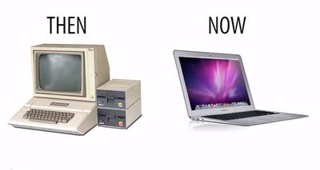
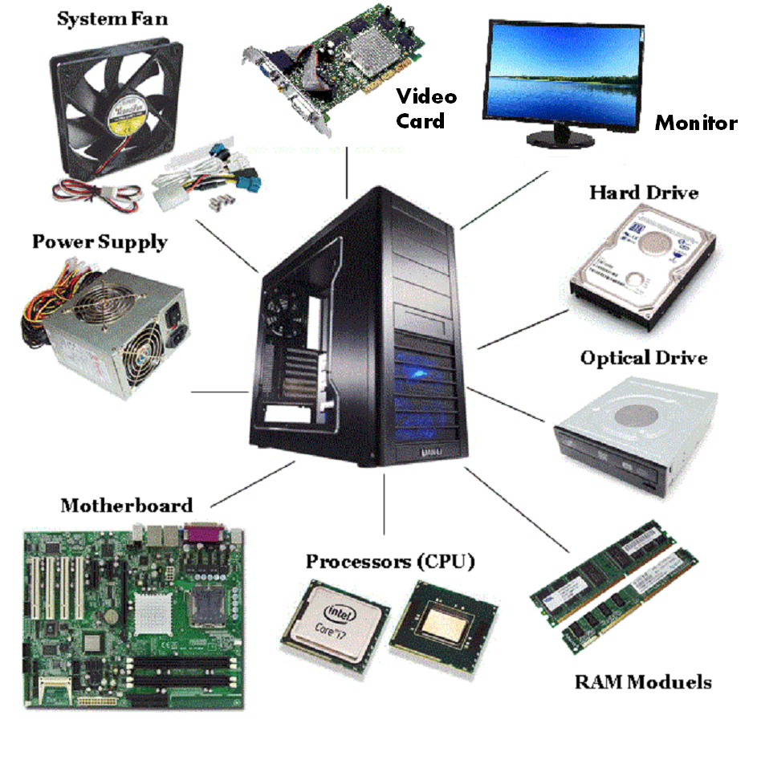
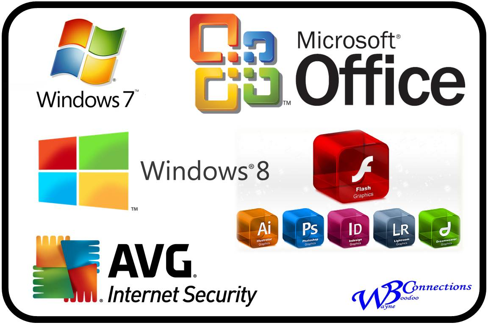

Computer
A computer is a device that can be instructed to carry out sequences of arithmetic or logical operations automatically via computer programming. Modern computers have the ability to follow generalized sets of operations, called programs. These programs enable computers to perform an extremely wide range of tasks.A computer is a great invention of the modern technology. It is generally a machine which has capability to store large data value in its memory. It works using input (like keyboard) and output (like printer) devices. It is very simple to handle the computer as its functioning is so common that a child can handle it. It is a very reliable device which we can carry with us and use anywhere and anytime. It allows us to make changes in the already stored data as well as store new data. A computer is a great invention of the modern technology. It is generally a machine which has capability to store large data value in its memory. It works using input (like keyboard) and output (like printer) devices. It is very simple to handle the computer as its functioning is so common that a child can handle it. It is a very reliable device which we can carry with us and use anywhere and anytime. It allows us to make changes in the already stored data as well as store new data. A computer is a great invention of the modern technology. It is generally a machine which has capability to store large data value in its memory. It works using input (like keyboard) and output (like printer) devices. It is very simple to handle the computer as its functioning is so common that a child can handle it. It is a very reliable device which we can carry with us and use anywhere and anytime. It allows us to make changes in the already stored data as well as store new data.

Data vs. Information
Data are calculated and processed on a daily basis through computers in business, at home, and in education. Data are essentially the raw facts that are usually typed into a computer. We call these "raw" facts due to them being unorganized. They can come in any form from audio and visual, to text and numerical. When the data is entered into the computer, it is considered input. The computer calculates the data and spits out the information. Since this information is the output, it becomes the organized version of what used to be raw facts. This system is considered information processing. Data can also come in other forms including figures, experiments, and surveys. Most everything that is entered into a computer becomes data, which is why this term is so vital to understanding computers and how they operate.[1] Information is produced by the data; it is form of knowledge, and computers calculate detailed information.[2] When most people think of information, the first source that comes to mind is Google. Google allows you to access a lot of information in a short amount of time. What most do not know is that is exactly what a computer does behind the scenes every time you are entering data into a computer, most of the time without even considering it to be "data." Information is a way to get answers to questions, because they are the output of the data you have put in to process. Many online sources provide endless amounts of information. Without information, people will not have reliable sources for school and their career. Work can be made much easier with information, including jobs which need to calculate employee's total hours worked, or any "total data" that needs to be found or calculated. Data and information are very valuable, and is most certainly the backbone of a computer. These two components may help your computer to be user-friendly by working behind what you are typing to make data useful and organized.[3]
Computers Then and Now

The Industrial Age: First general mechanical computer was proposed and partially built by the English inventor Charles Babbage in 1837. It was an Analytical Engine which contained an Arithmetic Logic Unit (ALU) and permitted basic programmatic flow control. It was programmed using punch cards, and also featured integrated memory. Historians consider it to be the first design concept of a general-purpose computer. Unfortunately, because of funding issues the Analytical Engine was never built while Babbage was alive. It wasn't until 1910 that Henry Babbage, Charles Babbage's youngest son, was able to complete a portion of this machine which was able to perform basic calculations. The Analytical Engine was to be a general-purpose, fully program-controlled, automatic mechanical digital computer. It was designed to consist of four components: the mill, the store, the reader, and the printer- which are all essential components of every computer today.[4] The Information Age (beginning in 1950 until current): Also known as the Computer Age, Digital Age, or New Media Age. Digital computing was invented by Claude Shannon in late 1950's. What he envisioned was a computer built from electrical circuits instead of motors. By drawing on Boolean algebra — which assigns the value of “1” to “true” statements and the value of “0” to “false” statements — he applied the value of “1” to circuits turned on, and the value of “0” to circuits that were off. Shannon also pioneered the field of information theory, which addresses the issue of how to quantify information, as in “bits” and “bytes.” To express information in a “bit,” one uses a binary digit, either a “1” or a “0.” These binary digits can describe everything from words to pictures to songs to videos to the most sophisticated gaming software.[5] Today, it is difficult for any student to imagine life without a computer. However, computers have only been around since the mid 1900's. The computer industry went from making computers that took up an entire classroom to currently being able to fit into a student's backpack. Also, computers used to be much more expensive and required a greater amount of energy than today's computers. Finally, in the 1980s, people began placing these foreign objects into their home. During this time, people had to really study and be patient with this handy device.[6] People have seen the drastic changes that have been made to computers in a span of only forty years. Computers today are much smaller, lighter, require less energy, and cheaper. However, in today's generation, computers are second nature to most people, and one could not imagine life without them.Computers in our generation seem to be integrated in our every day life to assist in multiple tasks related to our many needs. So much so, it is difficult to picture our world without them. However, with great success comes great patience. In the first computer model (1946-1957) for example, the machine required certain inputs, referred to as punch cards, and physical work to reprogram the computer. The computer itself was nowhere near as helpful, simple, nor convenient as it is today. The first generation computers were built with thousands of vacuum tubes, required physical effort to re-wire the computer, and could only solve one problem at a time. The second generation of computers (1958-1963) introduced transistors, which replaced the vacuum tubes. Transistors simply acted as a light switch, allowing the electronic circuits to either open or close. Both first generation computers, and second generation computers continued to use punch cards for their input. Second generation computers also introduced hard drives (hardware), and programming languages (FORTAN & COBOL). Soon after, (1964-1970), the third generation used a system of integrated circuits, which incorporated many transistors and electronic circuits on a single silicon chip. The third generation of computers started the innovative trend of smaller and more reliable computers. Keyboards and monitors were now considered the computer’s input/output. Finally, the development of our current computers, used by practically everyone in society, began. The fourth generation of computers began in 1971, when it was possible to place far more transistors onto a single chip- the microprocessor. This discovery led within the decade to the creation of IBM's personal computers, as well as the popular Apple Macintosh. Consumers currently use inputs, outputs, and storage that consist of: keyboards, mice, monitors, printers, speakers, hard drives, flash memory media, and optical disks. Fifth generation computing devices, based on artificial intelligence, are still in development, though there are some applications, such as voice recognition, that are being used today. The use of parallel processing and superconductors is helping to make artificial intelligence a reality. Quantum computation and molecular and nanotechnology will radically change the face of computers in years to come. The goal of fifth-generation computing is to develop devices that respond to natural language input and are capable of learning and self-organization.[7] Although the movement from vacuum tubes to microprocessors seemed to take a while, compared to the beginning of civilization thousands of years ago, this advancement happened very quickly. However, it also opens the human mind to realize that innovation takes trial, error, and patience.
Hardware

Hardware refers to the physical elements of a computer. This is also sometime called the machinery or the equipment of the computer. Examples of hardware in a computer are the keyboard, the monitor, the mouse and the central processing unit. However, most of a computer's hardware cannot be seen; in other words, it is not an external element of the computer, but rather an internal one, surrounded by the computer's casing (tower). A computer's hardware is comprised of many different parts, but perhaps the most important of these is the motherboard. The motherboard is made up of even more parts that power and control the computer.Hardware refers to the physical elements of a computer. Also referred to as the machinery or the equipment of the computer. Examples of hardware in a computer are the keyboard, the monitor, the mouse and the processing unit However, most of a computer's hardware cannot be seen; It's inside the computer case.I/O lets the computer talk with the world around it. Sometimes its necessary to add functionality to a computer to keep it up to date, or make it better. The amount of I/O a computer has can be changed, by adding expansion cards that support I/O. A graphics card can be added to a computer to let it talk with a display, or a WiFi card can be added, which will let a computer talk to other computers without a connecting wire. Sometimes functionality can be added through a universal port, a port that supports multiple kinds of I/O. USB, FireWire, and Thunderbolt (Types of I/O) support multiple data types. Your keyboard, mouse, and monitor all connect to a computer's I/O.In contrast to software, hardware is a physical entity. Hardware and software are interconnected, without software, the hardware of a computer would have no function. However, without the creation of hardware to perform tasks directed by software via the central processing unit, software would be useless.Hardware is limited to specifically designed tasks that are, taken independently, very simple. Software implements algorithms (problem solutions) that allow the computer to complete much more complex tasks.
Case
A computer case is used to put the essential components of a computer in. This provides an enclosed space and easier organization for the components to go.
Power Supply
A power supply unit (PSU) is used to power all components inside the case. It does this by converting AC power to DC power that is regulated by the PSU. What this means is that each component needs a certain amount of volts to work and the power supply will regulate the volts accordingly.
Expansion Cards
An expansion card is used to enhance certain attributes of the system. For example, a sound card can enhance sound by giving you surround sound capability. Another example is a video card, this will enhance the graphics of your system.
Input/Output
This category refers to the components a computer uses that receive data and send information. Input devices do the receiving and the output devices do the sending. Some examples of input devices are a keyboard, mouse, and a gaming controller. Examples of output devices are a printer, monitor, and speakers.
Memory
The memory within a computer can be broken down into two categories: short term memory and long term memory. Short term memory is the random access memory (RAM) while the long term is either your hard disk drive (HDD) or compact disk drive (CDD). RAM can be tapped into immediately by programs on a computer allowing it to compute faster, but if the user needs to save information for later use, using the HDD or CDD is required.
CPU
The central processing unit (CPU) is used to calculate the commands sent to it by the programs used on the system. It performs all the arithmetic and logical operations. This comes in the form of a small chip that is connected into the computer motherboard. The motherboard is where all other devices are connected so they can speak with each other.
Communications Hardware
Communications hardware is important when it comes to letting computer users access information from the Internet, put information onto the Internet, or interact with other computer users on a network. This type of hardware includes modems, routers, and network adapters. Modems and routers are the devices that connect computer users to the Internet: Signals go from the Internet service provider to the modem, which then converts them into an appropriate form and sends them through the router to the computer (or, when the computer user is sending information to the Internet, signals are sent via the router to the modem, which converts them and sends them to the Internet service provider.)[9] Modems and routers can be either wired or, increasingly commonly, wireless, communicating with the computer via signals rather than a physical connection. Network adapters are what allow computers to communicate on a small, local network. Sometimes, however, a computer may have a network adapter that consists entirely of software, called a virtual adapter. If this is in use, such as on a virtual private network (VPN), then no hardware component is needed.
Software

Software commonly known as programs or apps, consists of all the instructions that tell the hardware how to perform a task. These instructions come from a software developer in the form that will be accepted by the platform (operating system + CPU) that they are based on. For example, a program that is designed for the Windows operating system will only work for that specific operating system. Compatibility of software will vary as the design of the software and the operating system differ. Software that is designed for Windows XP may experience a compatibility issue when running under Windows 2000 or NT.Software is capable of performing many tasks, as opposed to hardware which can only perform mechanical tasks that they are designed for. Software provides the means for accomplishing many different tasks with the same basic hardware.Practical computer systems divide software systems into two major classes:
-
- System Software
- Helps run the computer hardware and computer system itself. System software includes operating systems, device drivers, diagnostic tools and more. System software is almost always pre-installed on your computer
-
- Application Software
- Allows users to accomplish one or more tasks. It includes word processing, web browsing and almost any other task for which you might install software. (Some application software is pre-installed on most computer systems.)
Computer Users and Professionals
Computers are nothing without the people that use them, the common user and the professional. The common user is anyone that uses the computer for general purposes. This includes checking emails, playing computer games, typing up a paper, and the list goes on. What distinguishes a common user from a professional is that a professional works in the field of computer information technology. Examples of professions in this field are a computer programmer, web designer, network administrator, and software engineer. These are but a few of the many jobs involved in the field of computer information technology. These are the people that design the hardware to build computers, they keep business networks secure, they program software to communicate effectively with the user and hardware, and develop the latest and greatest software for the common user to enjoy.